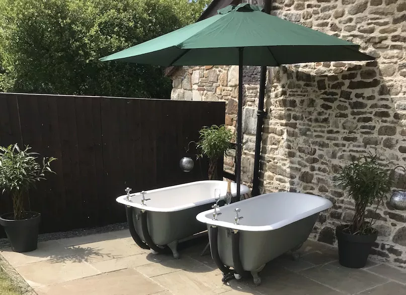

At the centre of this Welsh farm, overlooking the stone circle lies our newly converted 17th century barn. This original stone building is nestled into the landscape with panoramic views and carries much history within its walls. In its current chapter The Old Barn has been lovingly renovated for the ultimate luxury, five star farm stay comfortably accomodating up to six people.
The Old Barn comfortably accomodates up to six people across three bedrooms, each with it's own luxurious setting. Each bedroom has been carefully decorated for guests to enjoy views of the Welsh countryside and the original architecture of the barn in style. One of the bedrooms features a 'zip-lock' super king bed, making a twin room with flexible options.
The ideal farm stay holiday is not complete without the perfect farm kitchen! With ample communal space the kitchen at The Old Barn is perfect for getting the whole family eating together. The kitchen is also fully equipped with everything a chef might need, including some of our favourite recipe books!
Enjoy a view of the sunset over the Welsh mountains from the comfort of our warm, bubbly cast iron bath tubs! The Old Barn features a private garden with panoramic views and a paved seating area for alfresco dining options on those long sunny evenings.
Nant y Gaseg is a working farm and your stay at The Old Barn is full of the perks this brings, including ample parking, private garden, a complimentary welcome pack and perhaps one or two baby goats! The farm is also firmly in the modern era with full wifi throughout The Old Barn and an electrical vehicle charging point in the parking area.
A Beautiful barn conversion in the Welsh countryside with everything you could possibly want. Excellent, friendly and helpful hosts. We thoroughly enjoyed our stay and would highly recommend it to everyone. Thank you Helen, Paul, Bryn and Grace for making our Christmas so special
Wendy
Brilliant stay - two couples for four nights. We appreciated this outstanding accommodation in a superbly renovated barn which was listed in the Domesday Book. The barn - with glorious outlook/views- was spacious, well equipped and beautifully decorated. Helen was a perfect host, informative and welcoming - we loved the time spent with the baby goats. On our brief visit to Wales, the location was a central base for days in the Brecon Beacons, Govans Head and the Gower Peninsular.
Jennifer
Perfect holiday, perfect location, perfect hosts. The barn is a beautiful place to relax and enjoy your stay. The rooms are spacious and luxurious. Everything was accommodated for. Helen and Paul are wonderful hosts. The animals are an excellent addition to this tranquil space. The views are breath taking. Our grandchildren had loads of space to run and have fun. We intend on returning in the near future.
Erika